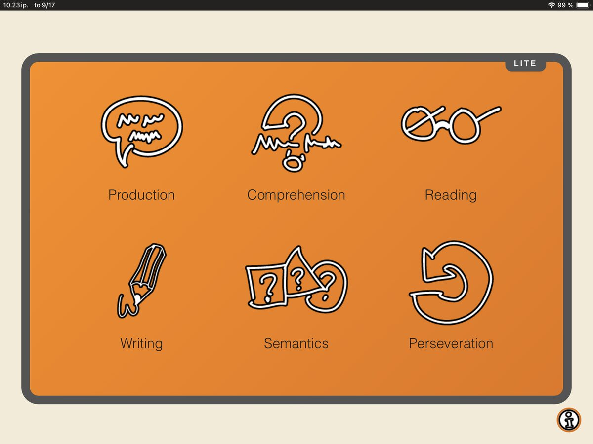
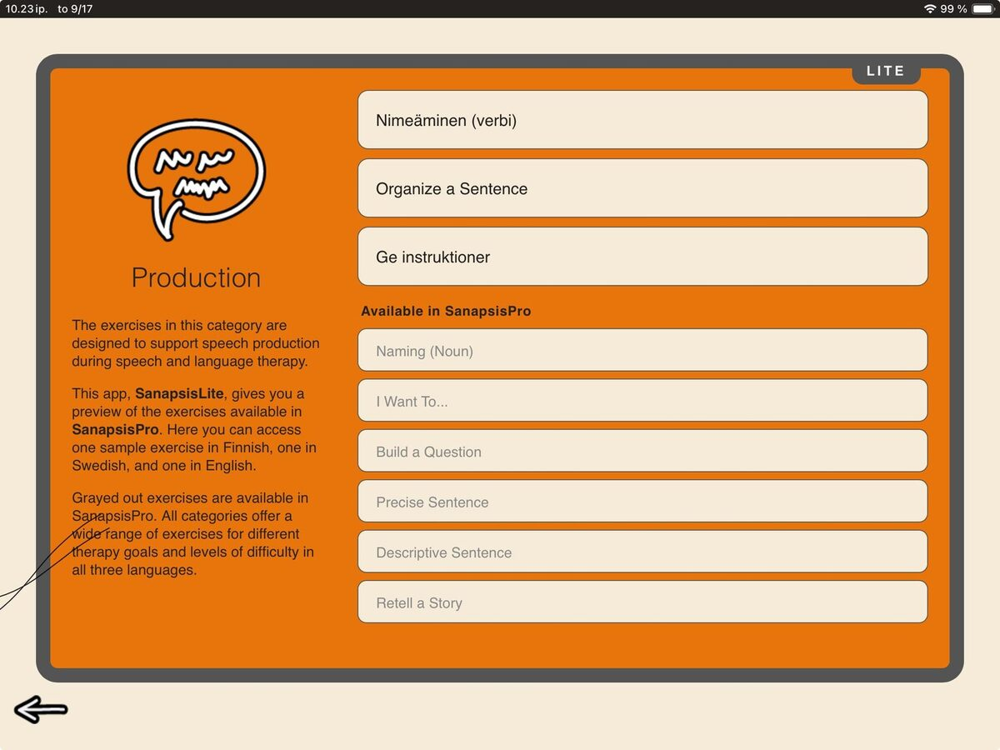

Sanapsis Lite has had a refresh! The free demo version of SanapsisPro now mirrors the full app with a new look.

So, what exactly is Sanapsis Lite?
Sanapsis Lite is a way to explore SanapsisPro and get a feel for how the exercises work before moving on to the full version. Like SanapsisPro, the Lite version is designed for speech and language therapists working with adults with acquired communication difficulties.
The exercises are organized into the same six categories as in SanapsisPro. In Lite, each category includes three sample tasks: one in Finnish, one in Swedish, and one in English. This gives you a chance to explore different types of exercises, try the navigation and settings, and see how Sanapsis is designed to be used together with your patient during a therapy session. In SanapsisPro, all exercises are available in Finnish, Swedish, and English.

Speaking of the full exercise collection… You can now see all the exercises available in the pro version in Sanapsis Lite. Those available only in SanapsisPro are grayed out, giving you a preview of what is included in the full version (titles in English).
If you haven’t opened Sanapsis Lite in a while, now is a good time to take a look. And if Sanapsis is completely new to you, Sanapsis Lite is a good place to start.
As always, I am here for your questions. Please reach out via sanapsis@puheklinikka.net with any and all questions about the Sanapsis app family!